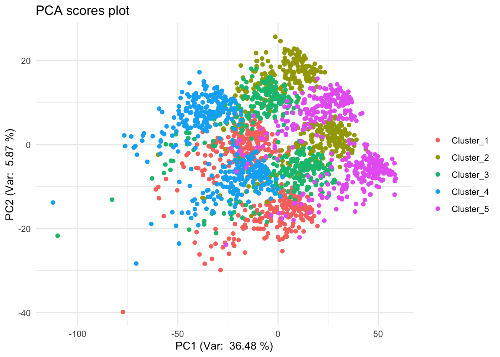
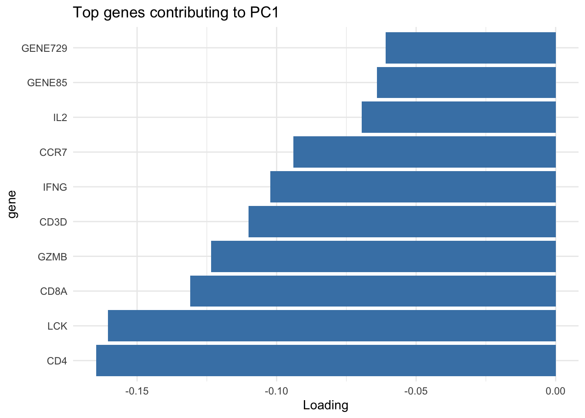
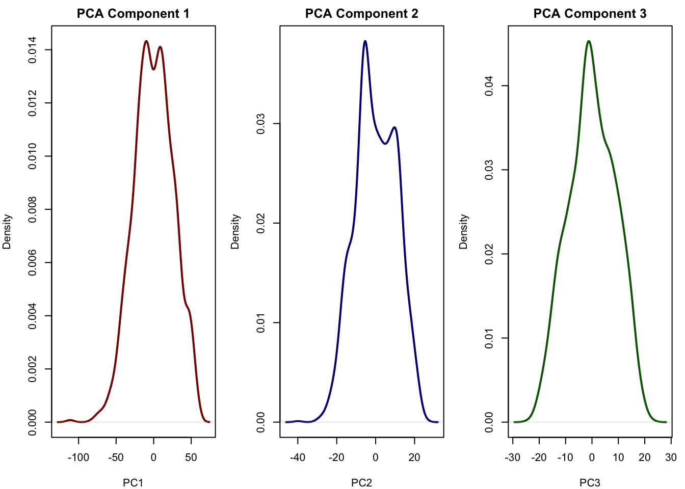
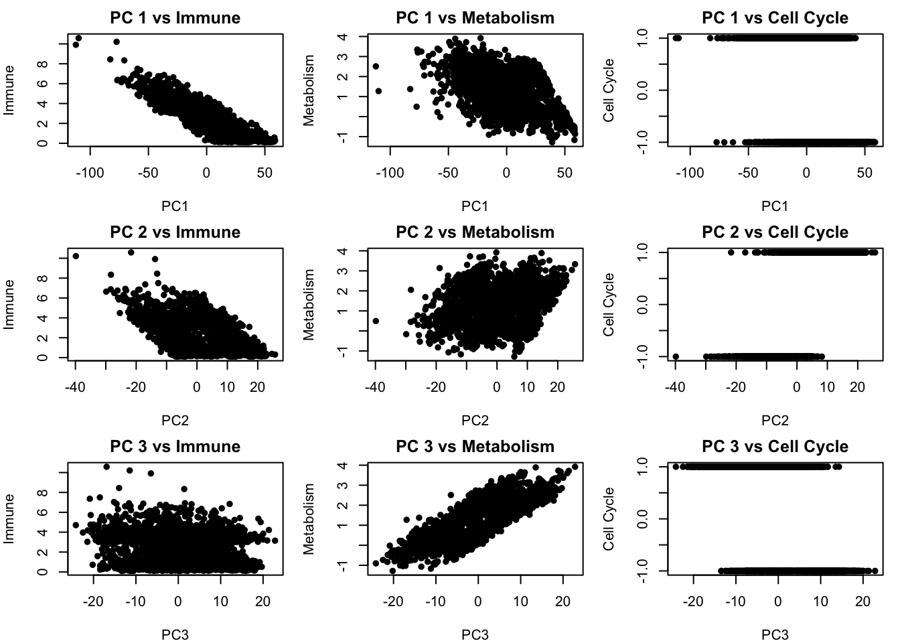
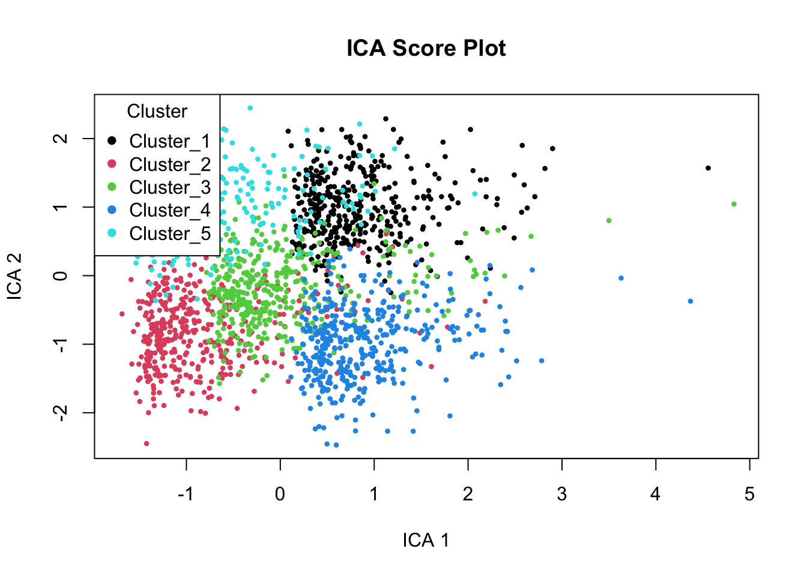
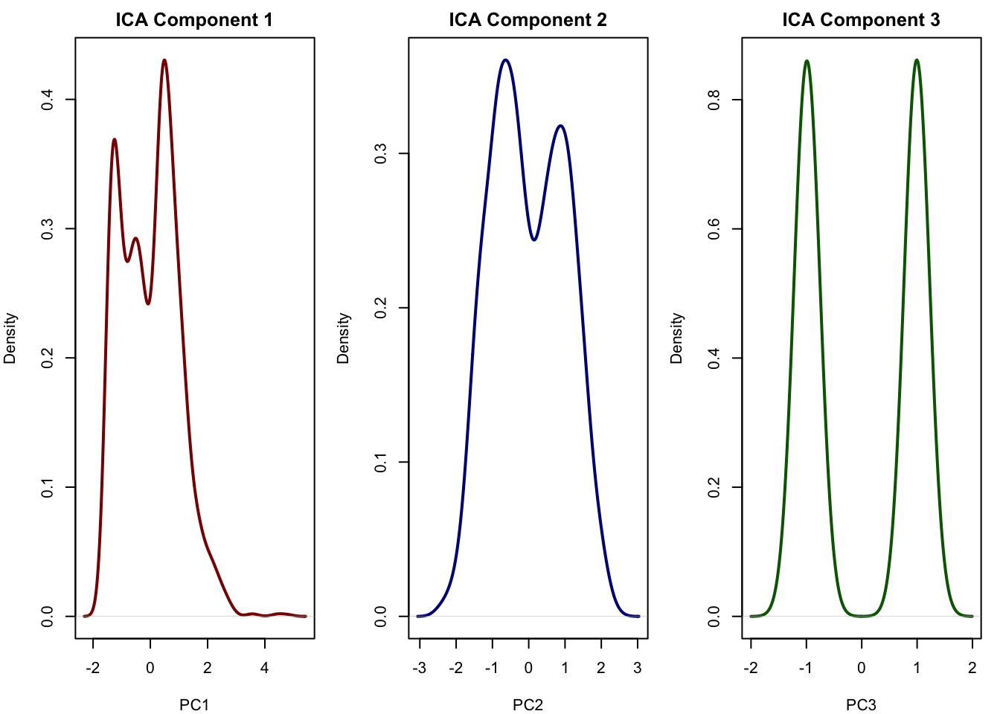

# adjust data simulation code to include some gene names for the main categories
# Load necessary library
library(tidyverse)
library(fastICA)
# Set parameters
set.seed(123)
n_cells <- 2000
n_sources <- 3
n_clusters <- 5
cells_per_cluster <- n_cells / n_clusters
# Define gene sets
immune_genes <- c("CD3D", "CD4", "CD8A", "IFNG", "IL2", "PTPRC", "GZMB", "LCK", "CCR7", "HLA-DRA")
metabolism_genes <- c("HK2", "LDHA", "PKM", "G6PD", "ACLY", "IDH1", "PGK1", "CPT1A", "FASN", "ACACA")
cell_cycle_genes <- c("CDK1", "CCNB1", "MKI67", "PCNA", "TOP2A", "BUB1", "CDC20", "PLK1", "AURKB", "CENPA")
db_genes <- data.frame(
gene = c(immune_genes, metabolism_genes, cell_cycle_genes),
category = c(rep("Immune", length(immune_genes)),
rep("Metabolism", length(metabolism_genes)),
rep("Cell Cycle", length(cell_cycle_genes)))
)
# Fill up to 1000 genes with generic names
other_genes <- paste0("GENE", 1:(1000 - length(immune_genes) - length(metabolism_genes) - length(cell_cycle_genes)))
gene_names <- c(immune_genes, metabolism_genes, cell_cycle_genes, other_genes)
n_genes <- length(gene_names)
# Define cluster-specific means for latent sources (immune, metabolism)
cluster_means <- matrix(c(
3.0, 0.5, # Cluster 1: High immune, low metabolism
0.1, 2.0, # Cluster 2: Low immune, high metabolism
1.5, 1.5, # Cluster 3: Moderate all
3.0, 2.5, # Cluster 4: High in all
0.1, 0.1 # Cluster 5: Low in all
), ncol = 2, byrow = TRUE)
# Simulate latent sources
latent_sources <- NULL
cluster_labels <- NULL
for (i in 1:n_clusters) {
immune <- rexp(cells_per_cluster, rate = 1) + cluster_means[i, 1]
metabolism <- rnorm(cells_per_cluster, mean = cluster_means[i, 2], sd = 0.5)
cell_cycle <- (rbinom(cells_per_cluster, 1, 0.5) * 2 - 1)
sources <- cbind(immune, metabolism, cell_cycle)
latent_sources <- rbind(latent_sources, sources)
cluster_labels <- c(cluster_labels, rep(paste0("Cluster_", i), cells_per_cluster))
}
# Create gene loadings matrix
gene_loadings <- matrix(0, nrow = n_genes, ncol = n_sources)
rownames(gene_loadings) <- gene_names
# Assign high loadings for known gene sets
gene_loadings[immune_genes, 1] <- abs(rnorm(length(immune_genes), mean = 2))
gene_loadings[metabolism_genes, 2] <- abs(rnorm(length(metabolism_genes), mean = 2))
gene_loadings[cell_cycle_genes, 3] <- abs(rnorm(length(cell_cycle_genes), mean = 2))
# Background genes with small random loadings
remaining <- setdiff(gene_names, c(immune_genes, metabolism_genes, cell_cycle_genes))
gene_loadings[remaining, ] <- abs(matrix(rnorm(length(remaining) * n_sources, mean = 0.3, sd = 0.2),
nrow = length(remaining), ncol = n_sources))
# Generate expression matrix
expression_matrix <- latent_sources %*% t(gene_loadings)
expression_matrix <- expression_matrix + matrix(rnorm(n_cells * n_genes, sd = 1), nrow = n_cells)
# Assign row/column names
rownames(expression_matrix) <- paste0("Cell", 1:n_cells)
colnames(expression_matrix) <- gene_names
x <- expression_matrix2 ICA
2.1 Introduction
Independent Component Analysis (ICA) is an unsupervised method that separates multivariate data into statistically independent signals, often used to uncover hidden biological processes. In this tutorial, you’ll learn how to apply ICA to gene expression data and interpret both sample structure and gene-level drivers.
Tutorial is based on https://payamemami.com/ica_basics/, a document with more detailed introduction to the methods, including its mathematical foundations.
2.2 Data
2.3 Preview data
# check data dimension
x <- expression_matrix
x |> dim() |> print() # 2000 cells, 1000 genes (features)
## [1] 2000 1000
cluster_labels |> as.factor() |> summary() |> print()
## Cluster_1 Cluster_2 Cluster_3 Cluster_4 Cluster_5
## 400 400 400 400 400# perform PCA
x_scaled <- scale(x)
pca <- prcomp(x, center=TRUE, scale.=FALSE)
eigs <- pca$sdev^2
var_exp <- eigs / sum(eigs)
res_pca <- data.frame(PC1=pca$x[,1], PC2=pca$x[,2], PC3=pca$x[,3], PC4=pca$x[,4], PC5=pca$x[,5]) |>
rownames_to_column("sample") |>
as_tibble()
res_pca_loadings <- pca$rotation
# show PCA scores plot
res_pca |>
ggplot(aes(x=PC1, y=PC2, color=cluster_labels)) +
geom_point() +
labs(title="PCA scores plot", x="PC1", y="PC2") +
xlab(paste("PC1 (Var: ", round(var_exp[1] * 100, 2), "%)")) +
ylab(paste("PC2 (Var: ", round(var_exp[2] * 100, 2), "%)")) +
theme_minimal() +
theme(legend.title=element_blank())
# show top 10 loadings along PC1
res_pca_loadings |>
as.data.frame() |>
rownames_to_column("gene") |>
arrange(desc(abs(PC1))) |>
head(10) |>
ggplot(aes(x=reorder(gene, PC1), y=PC1)) +
geom_bar(stat="identity", fill="steelblue") +
coord_flip() +
labs(title="Top genes contributing to PC1", x="gene", y="Loading") +
theme_minimal()
# PCA has actually done quite a good job finding our clusters. The first few principal components clearly separate the major groups, showing that PCA is able to capture dominant sources of variation in the data.
# However, this does not necessarily mean that PCA has recovered the original biological signals (such as immune activity, metabolism, or cell cycle) as separate components. Let’s have a look at the distribution of scores in each components
# Plot densities of the first 3 PCA components
pca_scores <- as.data.frame(pca$x[, 1:3])
pca_scores$Cluster <- cluster_labels
par(mfrow = c(1, 3), mar = c(4, 4, 2, 1))
plot(density(pca_scores$PC1), main = "PCA Component 1", xlab = "PC1", col = "darkred", lwd = 2)
plot(density(pca_scores$PC2), main = "PCA Component 2", xlab = "PC2", col = "darkblue", lwd = 2)
plot(density(pca_scores$PC3), main = "PCA Component 3", xlab = "PC3", col = "darkgreen", lwd = 2)
# The components of the PCA more or less look normal and do not really reflect the true latent factors we simulated [see chapter for details].
# We can also plot the relationship between the PCA components with all of our true latent factors:
# Set up 3x3 plotting area: PC1–3 vs latent sources
par(mfrow = c(3, 3), mar = c(4, 4, 2, 1))
for (pc_idx in 1:3) {
for (latent_idx in 1:3) {
plot(pca_scores[[pc_idx]], latent_sources[, latent_idx],
xlab = paste0("PC", pc_idx),
ylab = c("Immune", "Metabolism", "Cell Cycle")[latent_idx],
main = paste("PC", pc_idx, "vs", c("Immune", "Metabolism", "Cell Cycle")[latent_idx]),
#col = as.numeric(cluster_labels),
pch = 16)
}
}
# We see that there is some relationship between the PCA components and our latent factors but but PCs are still blended combinations of multiple underlying factors. This means that while PCA helps reveal structure, it may mix together distinct biological processes if those processes happen to contribute variance in similar directions.



2.4 run ICA
# Run Independent Component Analysis (ICA) on scaled data with 3 components
ica_result <- fastICA(x_scaled, n.comp = 3)
# fastICA: Performs Independent Component Analysis on multivariate data
# Key input parameters:
# - X: a numeric matrix or data frame with continuous values (e.g., scaled gene expression)
# - n.comp: number of independent components to extract (must be ≤ number of variables)
# - alg.typ: algorithm type; "parallel" (default, fast) or "deflation" (one component at a time)
# - fun: the nonlinearity function; common choices include "logcosh", "exp", or "cube"
# - alpha: only used with "logcosh", controls the shape of the contrast function
# - maxit: maximum number of iterations (default: 200)
# - tol: convergence tolerance (default: 1e-04)
print(names(ica_result))
## [1] "X" "K" "W" "A" "S"
# Output:
# $S — Estimated independent components (samples × components), main output for analysis.
# $A — Mixing matrix showing how components combine to form original data.
# $K — Whitening matrix used to decorrelate input data before ICA.
# $W — Unmixing matrix that transforms whitened data into independent components.
# $X — Centered version of the original input data used in the analysis.
# Extract the independent component scores (latent signals)
ica_scores <- as.data.frame(ica_result$S)
# Rename the columns for clarity
colnames(ica_scores) <- c("ICA 1", "ICA 2", "ICA 3")
# Add cluster labels (assumed from previous clustering) for coloring the plot
ica_scores$Cluster <- cluster_labels
# Plot the first two ICA components, colored by cluster
plot(ica_scores[,c(1,2)],
col = as.factor(pca_scores$Cluster), # coloring by cluster (note: should likely be ica_scores$Cluster)
pch = 16, cex = 0.6,
main = "ICA Score Plot")
# Add legend with cluster labels
legend("topleft", legend = unique(pca_scores$Cluster),
col = 1:5, pch = 16, title = "Cluster")
# The ICA scores plot shows samples colored by true clusters based on simulated biology (immune, metabolism, cell cycle).
# ICA separates clusters more distinctly than PCA by recovering statistically independent signals.
# ICA Component 1 appears to reflect immune activity (high in Clusters 1 & 4, low in 2 & 5).
# ICA Component 2 likely captures metabolism (low in Clusters 1 & 5, high in 2 & 4).
# The components show meaningful biological gradients across the samples.
# Let's see if ICA could recover our original latent signals
# Plot densities of the first 3 PCA components
par(mfrow = c(1, 3), mar = c(4, 4, 2, 1))
plot(density(ica_scores[,1]), main = "ICA Component 1", xlab = "PC1", col = "darkred", lwd = 2)
plot(density(ica_scores[,2]), main = "ICA Component 2", xlab = "PC2", col = "darkblue", lwd = 2)
plot(density(ica_scores[,3]), main = "ICA Component 3", xlab = "PC3", col = "darkgreen", lwd = 2)
# This looks very similar to our true signal the first component is immune, the second is metabolism and the third captured cell cycle (see chapter). This is exactly what ICA is good at: recovering independent sources that were mixed across thousands of genes. It allows us to reduce the data to a few components that may correspond directly to real biological processes. This is something that PCA often fails to do when the sources overlap or have similar variance

2.5 Exercise: interpret ICA
identifying genes driving ICA components
Explore the ICA mixing matrix (A) to determine which genes contribute most to each independent component. Your goal is to extract the top-weighted genes for each component, interpret their biological relevance using the provided db_genes annotation table, and suggest what underlying signal each component may represent (e.g., immune activity, metabolism, or cell cycle).
Hints
- Use
ica_result$Ato access the mixing matrix. - Take the absolute value of loadings to identify the strongest contributors (positive or negative).
- Use
order()orsort()to rank genes by their contribution to each component. - Match the top gene names to
db_genesto find their annotated biological function. - Focus on patterns: do multiple top genes belong to the same functional group?
- Compare your findings to the ICA score plots — do the gene signatures align with sample-level structure?
Example answer
# Extract the mixing matrix
A <- ica_result$A # rows = components, columns = genes
colnames(A) <- colnames(x) # assign gene names to columns if not already
# Loop over all components
top_genes_all <- list()
for (i in 1:nrow(A)) {
o <- order(abs(A[i, ]), decreasing = TRUE)[1:20]
top_genes <- colnames(A)[o]
annotated <- db_genes |>
filter(gene %in% top_genes) |>
mutate(Component = paste0("ICA_", i))
top_genes_all[[i]] <- annotated
}
# Combine all results into a single data frame
top_genes_df <- bind_rows(top_genes_all)
# View the annotated top genes by component
print(top_genes_df)
## gene category Component
## 1 CD3D Immune ICA_1
## 2 CD4 Immune ICA_1
## 3 CD8A Immune ICA_1
## 4 IFNG Immune ICA_1
## 5 IL2 Immune ICA_1
## 6 PTPRC Immune ICA_1
## 7 GZMB Immune ICA_1
## 8 LCK Immune ICA_1
## 9 CCR7 Immune ICA_1
## 10 HLA-DRA Immune ICA_1
## 11 HK2 Metabolism ICA_2
## 12 LDHA Metabolism ICA_2
## 13 PKM Metabolism ICA_2
## 14 G6PD Metabolism ICA_2
## 15 ACLY Metabolism ICA_2
## 16 PGK1 Metabolism ICA_2
## 17 CPT1A Metabolism ICA_2
## 18 FASN Metabolism ICA_2
## 19 ACACA Metabolism ICA_2
## 20 CDK1 Cell Cycle ICA_3
## 21 CCNB1 Cell Cycle ICA_3
## 22 MKI67 Cell Cycle ICA_3
## 23 PCNA Cell Cycle ICA_3
## 24 TOP2A Cell Cycle ICA_3
## 25 BUB1 Cell Cycle ICA_3
## 26 CDC20 Cell Cycle ICA_3
## 27 PLK1 Cell Cycle ICA_3
## 28 AURKB Cell Cycle ICA_3
## 29 CENPA Cell Cycle ICA_3In our simulated data it is very easy to see which component corresponds to which biological signal. In real data, however, it is often not so straightforward. You may need to look at the top genes and their annotations to see if they make sense in the context of your biological question.
Also note, that unlike PCA, which orders components by variance explained, ICA components are unordered. The algorithm does not rank them by “importance.” This means:
- You may want to sort or label components manually based on interpretation.
- You can match ICA components to known sources (e.g. simulated immune or metabolism signals) using correlation or cluster separation.
# Correlation with true sources
cor(ica_result$S, latent_sources)
## immune metabolism cell_cycle
## [1,] 0.99565648 0.20075925 0.001202599
## [2,] 0.03306877 -0.97261234 -0.003206194
## [3,] -0.03741380 0.00472256 -0.992583786